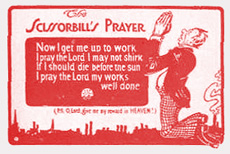

C.L.A.C. Attack
Submitted on Mon, 08/29/2005 - 3:02pm
On August 15th, Fort McMurray Today ran the following article on the upcoming actions:
Alberta CLAC under fire as new group targets them
By RENATO GANDIA
 To raise awareness of what they feel are unacceptable practices by the Christian Labour Association of Canada (CLAC) the Industrial Workers of the World (IWW) will be holding a rally in three Alberta cities, including Fort McMurray.
To raise awareness of what they feel are unacceptable practices by the Christian Labour Association of Canada (CLAC) the Industrial Workers of the World (IWW) will be holding a rally in three Alberta cities, including Fort McMurray.
’The main point of this rally is to raise awareness and solidarity against CLAC,’ said Bryan Roberts an IWW delegate from Edmonton, today. Scheduled on Aug. 26, the rally will be held in front of the CLAC in the Bob Lamb Industry Education Centre office between 7:30 to 9:30 p.m. ’We just want to raise awareness that CLAC as a union does not really represent its rank and file workers,’ Roberts said.
Early in July, an estimated 4,000 union workers staged a rally here against the CLAC and on the issue of bringing temporary foreign workers to Fort McMurray. This time the focus of the rally will be more general and not just about foreign workers, said Roberts.
Dick Heinen, CLAC’s provincial director, said they have the freedom to do whatever they want to do. ’IWW is a pretty outdated and very left-wing organization, but it’s their right to protest.’ Western Canada CLAC representative Frank Kooger said IWW represents nobody in the world in labour relations. ’They are not certified to represent anybody anywhere. It’s a movement thing. It’s not a union.’ [Apparently they haven't done their research --editor]
In a press release, IWW alleges that CLAC has a clear history of manipulation of workers in Alberta. ’CLAC is not content to take advantage only of workers already in Alberta. They will prey on the weaknesses of people coming to Canada looking for work and a better life,’ said the release.
Roberts said IWW is hoping the members of trade unions in Fort McMurray and the community at large attend the protest.
Members of the Christian Reformed Church, a Dutch Calvinist Church from the United States, founded the Christian Labour Association of Canada (CLAC) fifty years ago. Its membership in Canada grew as Dutch Immigrants came here after WWII.
As a right wing evangelical church, the members formed a labour association that was to be less political then the other unions in the Canadian Labour movement. As an evangelical Christian labour association CLAC believes in giving unto Caesar what is Caesars. They do not promote workers rights but the belief that workers should supplicate themselves before the boss cap in hand and ask “please sir can I ‘ave some more.”
Is CLAC a union?
NO. It is an association, and as such has spent the past 50 years trying to get recognized as a union by provincial and federal labour relations boards.
They are an association that bargains on behalf of workers. When they approach and employer they do not act on behalf of the workers but begin negotiations as labour management consultants. Their approach is to offer the boss a docile bargaining agent on behalf of his employees. The boss and CLAC then promote the association to the employees as a ‘union’, one that is approved of by the employer.
What is the advantage the bosses see in CLAC?
As a fake union CLAC keeps real unions out of the workplace. An employer would rather deal with a pro boss association then a real union of workers.
It also allows the employer to keep their employees isolated from the rest of the labour movement. Contracts are negotiated not between the workers and the boss but between CLAC Labour Management consultants and the boss on behalf of the workers.
CLAC does NOT believe in unionization
CLAC promotes the idea not only of the open shop, where you don’t have to be a union member to get a job, but also getting rid of the Rand Formula where once a union has 51% of the employees support all employees are represented by the union.
They believe in the right wing idea that no one should be forced to be in a union, even if the business is unionized. Only those workers who want a union should be ‘forced’ to be in it. This is the same ideology of the right wing lobby the National Citizens Coalition, and the right wing think tank the Fraser Institute.
CLAC is Not Democratic.
Workers in a CLAC association are ‘represented’ by consultants, who run the association and decide who will be association representatives. There is no trade union democracy in CLAC. Member pay dues but have no say in how the Association runs. CLAC is anti-democratic.
"The majority of CLAC's members in Alberta come from workplaces certified through voluntary recognition. That means that nobody in these workplaces ever voted to certify CLAC as the union - nobody except CLAC itself and the employer that is.” Kerry Barrett, President, Alberta Federation of Labour
CLAC Raids Other Unions.
In Alberta CLAC has been the ‘union’ of choice of the Merit Shops, the non-union construction industry in the province. CLAC likes Merit Shops and represents several of them.
They also represent workers at Save On Foods. They have a sweetheart deal with born again Christian Jim Pattison who owns Save On Foods. Pattison wanted CLAC in so he could keep UFCW out.
The Alberta government has changed the Labour Relations Act to allow the Horizon Oil Sands Project to be non-union, and allow for importing cheap labour from abroad. Horizon has a deal with CLAC to represent these non-union workers.
The 'Christian' labour association is a liability to all workers in Alberta. They raid established trade unions, cozy up to bosses, and cut sweetheart deals. CLAC contracts are not the work of rank and file consultation, but rather the work of management cutting deals behind the scenes with little (if any) input from the workers.
They lower the pay standards in many industries not just undermining skilled labourers, but undercutting the wage of low end retail workers, such as those employed at Save-On-Foods. Under the guise of 'non-confrontational' bargaining they imply that workers and bosses can be friends. With friends like Merit contractors, Ledcore, and Save-On-Foods who needs enemies?
Most importantly though, CLAC is growing, and it is time labour fought back. CLAC is not a small organization rather they are quite large and growing with the help of anti union employers.
With the Alberta Labour Relations Board ruling on OEM against the International Association of Machinists it has become very apparent that CLAC is very much a part of the 'Alberta Advantage'. It is time that all workers, in unions or not, organize themselves to fight back against working conditions in this province. This means taking on CLAC, the employers, and the government as one enemy, and not pretending we can count on sympathetic rulings from the ALRB. Our real strength is in our solidarity, not in lobbying government bureaucrats.
An Injury to One is an Injury to All!
For further information, visit this site: http://edmonton.iww.ca/clac.html